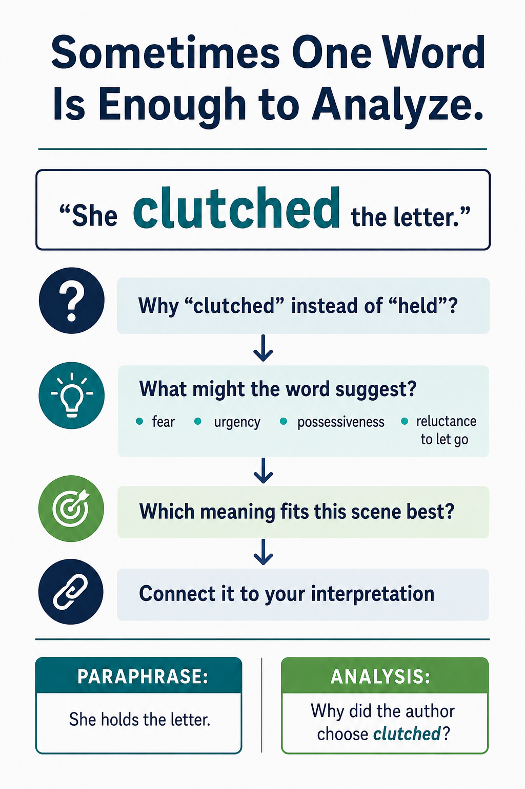

Before You Practice: Slow Down Around the Smallest Useful Detail
Close reading does not require you to explain every word in a quotation. Often the strongest analysis begins when you identify one word or phrase that carries unusual weight and ask why that choice matters.

Read the full text version of this infographic
Sometimes One Word Is Enough to Analyze
Consider this sentence:
“She clutched the letter.”
The word “clutched” is emphasized.
AskWhy “clutched” instead of “held”?
What might the word suggest?fear • urgency • possessiveness • reluctance to let go
Next questionWhich meaning fits this scene best?
ThenConnect it to your interpretation.
Paraphrase: She holds the letter.
Analysis: Why did the author choose “clutched”?
The point is that close reading can begin by slowing down and examining the implications of one important word instead of merely restating what the sentence says.
1. Find the DetailWhich word, image, contrast, action, or choice stands out?
2. Ask What It DoesWhat feeling, idea, tension, or relationship does it create?
3. Connect It BackHow does that detail support the larger interpretation?
Do not choose a word just because it sounds interesting.
Choose the detail that gives you something useful to explain in relation to your interpretation.
Now Practice
Identify the smallest useful part of the evidence, then explain what that particular word, image, action, or contrast contributes to the interpretation.
Zoom In Practice
Round 1 of 3
Example 1 of 8
Round 1: Find the Detail
INTERPRETATION
EVIDENCE